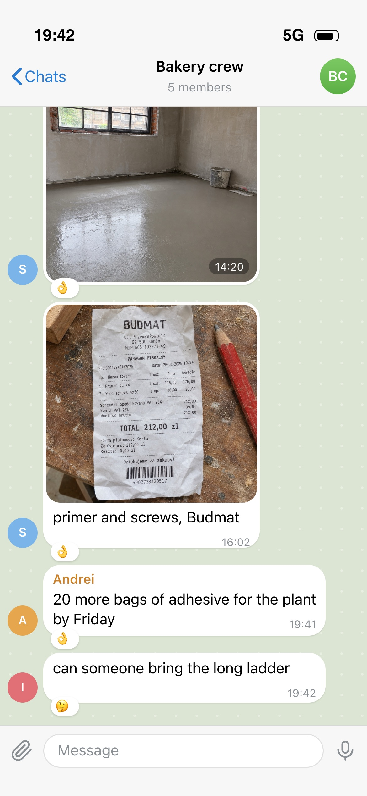
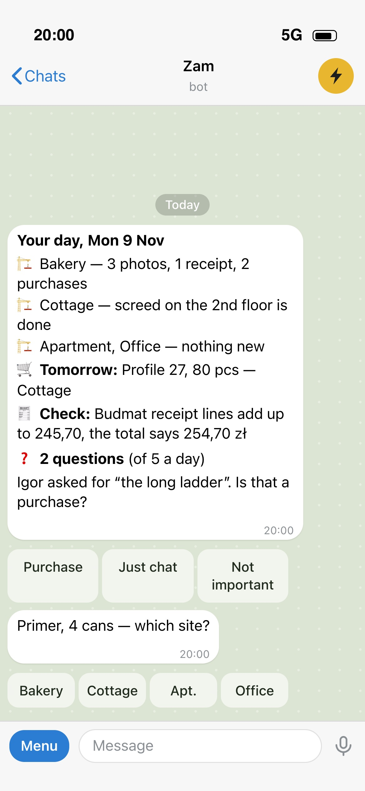
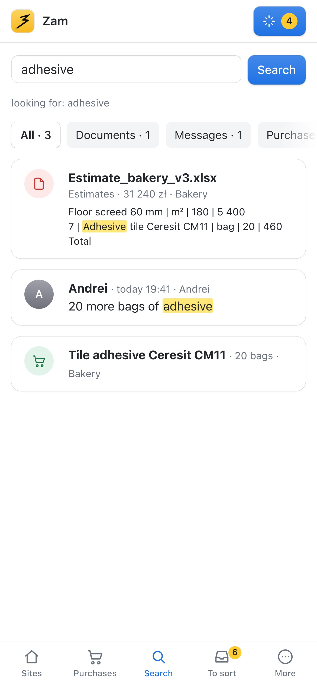

How do you want to read the case?
Zam is my own product for small construction crews. The crew keeps writing in its Telegram chats; a bot sorts photos, receipts, estimates and purchases by site and stays silent, and the foreman sees everything in an app on his phone or laptop. Money is never saved without a tap. I built v1 with AI in about a week, before the first user had sent me a single real file. The pilot stalled: the foreman didn’t pay and the crew didn’t change its habits. Now I talk to crews before I write code.

Crew chatWalkthrough
From a receipt in the crew chat to the evening summary
- Crew chat
- Cards to confirm
- Questions
- The app
One day of a foreman: the crew writes as usual, the bot files and asks, the app holds the structure.
01 · The problem
Ten hours a week and a ten-kilo backpack
- Interview
- 10 h → 2 h a week
- Word and Excel
I started with an interview with a foreman who runs three or four sites at once. Paperwork took him about ten hours a week: two on Monday, one on Tuesday, three on Thursday and Saturday morning. His own target was two hours: one on Tuesday, one on Friday. That became the main metric of the pilot.
He carried the documents of every site in a backpack, five to ten kilos, because “you never know which site will call today”. It was heavy enough to set off the passenger-seat belt alarm in his car. To find who said what, he scrolled through every chat. Estimates and contracts lived in Word and Excel, which break when you edit them on a phone.
Big construction tools, from Procore to PlanRadar, are sold to companies with someone whose job is to run the system. A foreman with five workers has no such person, and every form he fills in is time the product was supposed to save.
02 · The bet
The crew changes nothing
- Existing chats
- Silent bot
- Site = chat
The crew already lived in Telegram, so the riskiest thing would have been asking them to move. The bot joins the chats they already have, one per site, and stays silent. It reacts to a message with 👌 when it filed something and 🤔 when it isn’t sure. Questions and confirmations go to the foreman in a private chat, never to the group.
A site’s chat tells the bot the site in most cases. When it doesn’t, the bot uses the names people actually use: “the plant”, “at Sergei’s”. If it is still unsure, the message waits in a To sort list instead of being guessed.
03 · Trust
Money is never saved without a tap
- Save or Fix
- Original kept
- Second reading
One rule decided most of the bot’s behaviour. Documents and photos are filed straight away, with a Fix button. Money and purchases always come as a card the foreman saves or fixes, and a receipt a worker sends goes to the foreman to confirm. A wrong amount is worse than an empty field.
Voice notes come back with what the bot heard, because “forty” and “fourteen” sound alike on a building site. The original message is always kept, so nothing is lost even when the bot is wrong. At night the bot reads every new document a second time and checks that receipt lines add up to the total; whatever doesn’t match lands in Check.
04 · Structure
“Like Total Commander”
- Site → section → record
- Laptop in the evening
- Originals, not editors
The foreman put it plainly: a chat bot you throw everything at “is still a mess. You need structure.” He described it as a file manager: sites are drives, inside each are sections for documents, purchases, expenses and photos, and inside those the records. The app is built exactly that way.
He does paperwork in the evening, mostly on a laptop, so the app works in Telegram on the phone and as a normal web app on a big screen. It doesn’t try to edit Word or Excel: it keeps the originals, shows their contents and opens them in the apps made for them.
05 · Ask, don’t dig
Answers with the source, or “not found”
- Search
- Questions
- 5 a day, max
Instead of scrolling chats, the foreman asks: what do I need to buy by Friday, who wrote about the bedroom windows. The bot answers only from saved records and links to the message or document it used. If it finds nothing, it says so; it never makes up a number.
The bot also has questions of its own, and they could easily become noise. They come once a day in the evening summary, no more than five, the most useful first, and “not important” counts as an answer.

Evening
Search06 · Cost as design
AI cost shaped the product
- $20 a month
- Cents per message
- Night batch
The foreman named the price himself: twenty dollars a month, “even if you’re doing one apartment”. Then I measured. A message cost 0.4¢ to sort, a page of a document 3.2¢, an answer 0.7¢. Without limits that came to ten to twenty dollars a month per crew, so at twenty dollars the margin was zero.
So cost became a design decision. Text in group chats isn’t sent to AI in real time; small talk is filtered out without AI; only the first photo of a batch is classified. The private chat is sorted at once, while files from groups wait for the night run at half price. A cheap model handles simple steps and a stronger one handles documents. A daily cap stops runaway spend, and I see where every cent goes.
07 · Honest part
I built it before the habit was there
- Pilot stalled
- Trust
- Talk first
Building was fast: with AI writing the code, v1 was running on a server in about a week. That speed was the trap. The product was ready before the foreman had sent me a single real voice note, photo or chat export, and the pilot never really started. He didn’t pay, and the crew didn’t change how it worked.
My bet was that sending a voice note or a receipt photo to a chat is simpler than two hours of paperwork. It hasn’t been proven. Builders don’t trust new tools easily, and things that feel simple to me feel complicated to them. Fast code didn’t fix that; only time on site with people would.
Now I’m testing a new market, Poland, where I live, and I talk before I build: eight to ten conversations with foremen first, then code. Polish crews mostly use WhatsApp, where a bot can’t join an existing group, so the plan is a hybrid: a messenger for workers, an app for the foreman. The decision point is January: paying crews, or a clear reason why not.
Scale
Zam, screen by screen
- 18 screens
- Telegram, web, phone
The bot in Telegram, the app on a laptop and on a phone. Open any of them full size.